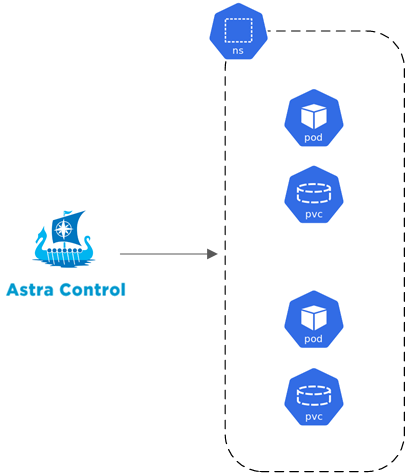
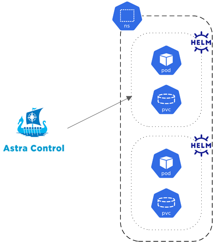
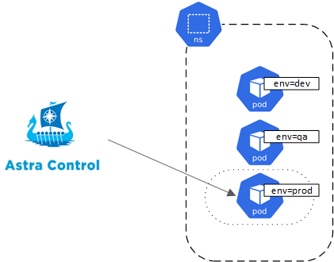
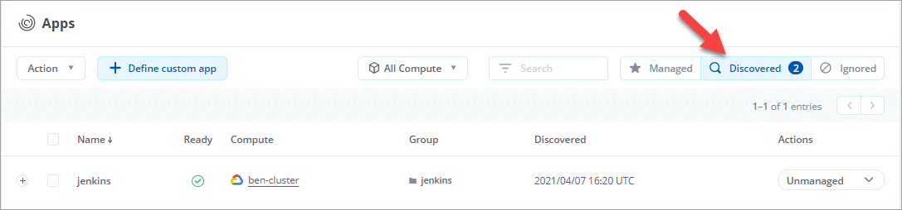
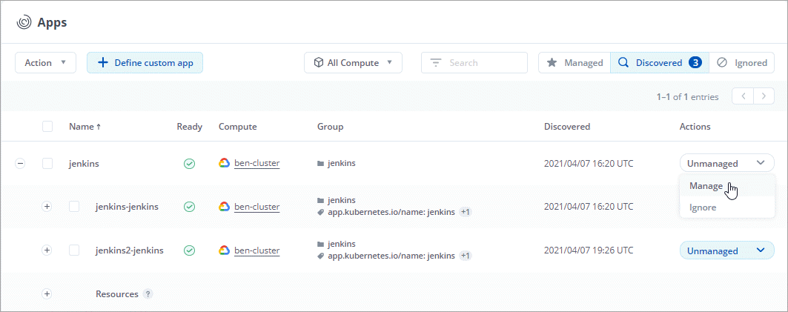
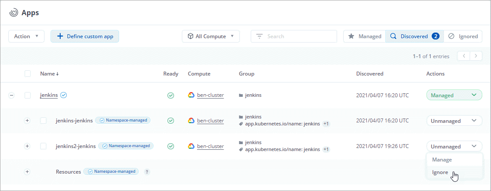
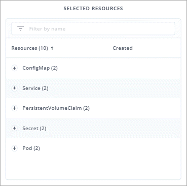
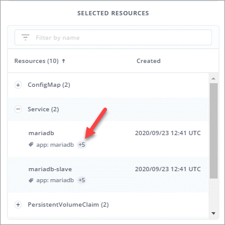
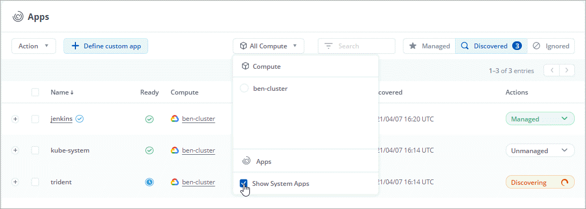

开始管理应用程序
提供者
你先请 "将 Kubernetes 集群添加到 Astra Control"，您可以在集群上安装应用程序（在 Astra Control 之外），然后转到 Astra Control 中的应用程序页面开始管理这些应用程序。
应用程序管理要求
请考虑以下 Astra Control 应用程序管理要求：
-
* 许可 * ：要使用 Astra 控制中心管理应用程序，您需要获得 Astra 控制中心许可证。
-
* 命名空间 * ： Astra Control 要求一个应用程序不能跨越多个命名空间，但一个命名空间可以包含多个应用程序。
-
* 存储类 * ：如果您安装的应用程序明确设置了 StorageClass ，并且需要克隆该应用程序，则克隆操作的目标集群必须具有最初指定的 StorageClass 。将显式设置了 StorageClass 的应用程序克隆到不具有相同 StorageClass 的集群将失败。
-
* Kubernetes Resources* ：使用非 Astra Control 收集的 Kubernetes 资源的应用程序可能没有完整的应用程序数据管理功能。Astra Control 收集以下 Kubernetes 资源：
-
ClusterRole
-
ClusterRoleBinding.
-
配置映射
-
自定义资源定义
-
自定义资源
-
DemonSet
-
部署
-
DeploymentConfig
-
传入
-
MutatingWebhook
-
PersistentVolumeClaim
-
POD
-
ReplicaSet
-
RoleBinding.
-
Role
-
路由
-
机密
-
服务
-
ServiceAccount
-
状态集
-
验证 Webhook
-
支持的应用程序安装方法
您可以使用以下方法安装要使用 Astra Control 管理的应用程序：
-
* 清单文件 * ： Astra Control 支持使用 kubectl 从清单文件安装的应用程序。例如：
kubectl apply -f myapp.yaml
-
* Helm 3* ：如果使用 Helm 安装应用程序，则 Astra Control 需要 Helm 版本 3 。完全支持管理和克隆随 Helm 3 安装的应用程序（或从 Helm 2 升级到 Helm 3 ）。不支持管理随 Helm 2 安装的应用程序。
-
* 操作员部署的应用程序 * ： Astra Control 支持使用命名空间范围的运算符安装的应用程序。这些操作员通常采用 " 按价值传递 " 架构，而不是 " 按参考传递 " 架构。以下是一些遵循这些模式的操作员应用程序：
请注意， Astra Control 可能无法克隆使用 " 按参考传递 " 架构设计的运算符（例如 CockroachDB 运算符）。在这些类型的克隆操作期间，克隆的操作员会尝试引用源操作员提供的 Kubernetes 机密，尽管在克隆过程中他们拥有自己的新机密。克隆操作可能会失败，因为 Astra Control 不知道源运算符中的 Kubernetes 密钥。

|
操作员及其安装的应用程序必须使用相同的命名空间；您可能需要为操作员修改部署 .yaml 文件，以确保情况确实如此。 |
在集群上安装应用程序
现在，您已将集群添加到 Astra Control 中，您可以在集群上安装应用程序。默认情况下，将在新存储类上配置永久性卷。Pod 联机后，您可以使用 Astra Control 管理应用程序。
只有当存储位于由 Astra Control 安装的存储类上时， Astra Control 才会管理有状态应用程序。
有关通过 Helm 图表部署常见应用程序的帮助，请参见以下内容：
管理应用程序
当 Astra Control 发现集群上运行的应用程序时，这些应用程序将不受管理，直到您选择要如何管理它们为止。Astra Control 中的受管应用程序可以是以下任一项：
-
命名空间，包括该命名空间中的所有资源

-
在命名空间中使用 helm3 部署的单个应用程序

-
一组通过 Kubernetes 标签标识的资源（在 Astra Control 中称为 custom app ）

以下各节介绍如何使用这些选项管理应用程序。
按命名空间管理应用程序
" 应用程序 " 页面的 * 已发现 * 部分显示命名空间以及这些命名空间中 Helm 安装的应用程序或自定义标记的应用程序。您可以选择单独管理每个应用程序，也可以选择在命名空间级别管理每个应用程序。这一切都可以细化到数据保护操作所需的粒度级别。
例如，您可能希望为 "Maria" 设置一个每周节奏的备份策略，但您可能需要比该策略更频繁地备份 "MariaDB" （位于同一命名空间中）。根据这些需求，您需要单独管理应用程序，而不是在一个命名空间下进行管理。
虽然 Astra Control 允许您单独管理层次结构的两个级别（命名空间和该命名空间中的应用程序），但最佳做法是选择一个或另一个。如果在命名空间和应用程序级别同时执行操作，则在 Astra Control 中执行的操作可能会失败。
-
选择 * 应用程序 * ，然后选择 * 已发现 * 。

-
查看已发现的命名空间列表并展开命名空间以查看应用程序和关联资源。
Astra Control 会在命名空间中显示 Helm 应用程序和自定义标记的应用程序。如果 Helm 标签可用，则会使用标记图标来指定这些标签。
以下是一个命名空间中包含两个应用程序的示例：

-
确定是单独管理每个应用程序，还是在命名空间级别管理每个应用程序。
-
在层次结构中的所需级别，选择 * 操作 * 列中的下拉列表，然后选择 * 管理 * 。

-
如果您不想管理某个应用程序，请选择所需应用程序的 * 操作 * 列中的下拉列表，然后选择 * 忽略 * 。
例如，如果您希望同时管理 "Jenkins " 命名空间下的所有应用程序，以便它们具有相同的快照和备份策略，则可以管理此命名空间并忽略此命名空间中的应用程序：

您选择管理的应用程序现在可从 * 受管 * 选项卡访问。任何被忽略的应用程序都将移至 * 已忽略 * 选项卡。理想情况下， " 已发现 " 选项卡将显示零个应用程序，以便在安装新应用程序后更容易找到和管理这些应用程序。
按 Kubernetes 标签管理应用程序
Astra Control 在应用程序页面顶部包含一个名为 * 定义自定义应用程序 * 的操作。您可以使用此操作管理使用 Kubernetes 标签标识的应用程序。 "了解有关通过 Kubernetes 标签定义应用程序的更多信息"。
-
选择 * 应用程序 > 定义自定义应用程序 * 。
-
在 * 定义自定义应用程序 * 对话框中，提供管理该应用程序所需的信息：
-
* 新建应用程序 * ：输入应用程序的显示名称。
-
* 集群 * ：选择应用程序所在的集群。
-
* 命名空间： * 选择应用程序的命名空间。
-
* 标签： * 输入标签或从以下资源中选择标签。
-
* 选定资源 * ：查看和管理要保护的选定 Kubernetes 资源（ Pod ，机密，永久性卷等）。
以下是一个示例：

-
通过展开资源并选择标签数量来查看可用标签。

-
选择一个标签。

-
选择标签后，它将显示在 * 标签 * 字段中。Astra Control 还会更新 * 未选定资源 * 部分，以显示与选定标签不匹配的资源。
-
* 未选择资源 * ：验证您不想保护的应用程序资源。

-
-
选择 * 定义自定义应用程序 * 。
使用 Astra Control 可以管理应用程序。现在，您可以在 * 受管 * 选项卡中找到它。
系统应用程序如何？
Astra Control 还会发现 Kubernetes 集群上运行的系统应用程序。您可以通过筛选应用程序列表来查看这些应用程序。

默认情况下，我们不会向您显示这些系统应用程序，因为您很少需要备份这些应用程序。
 请求文档变更
请求文档变更 在 GitHub 上编辑
在 GitHub 上编辑 提供者指南
提供者指南